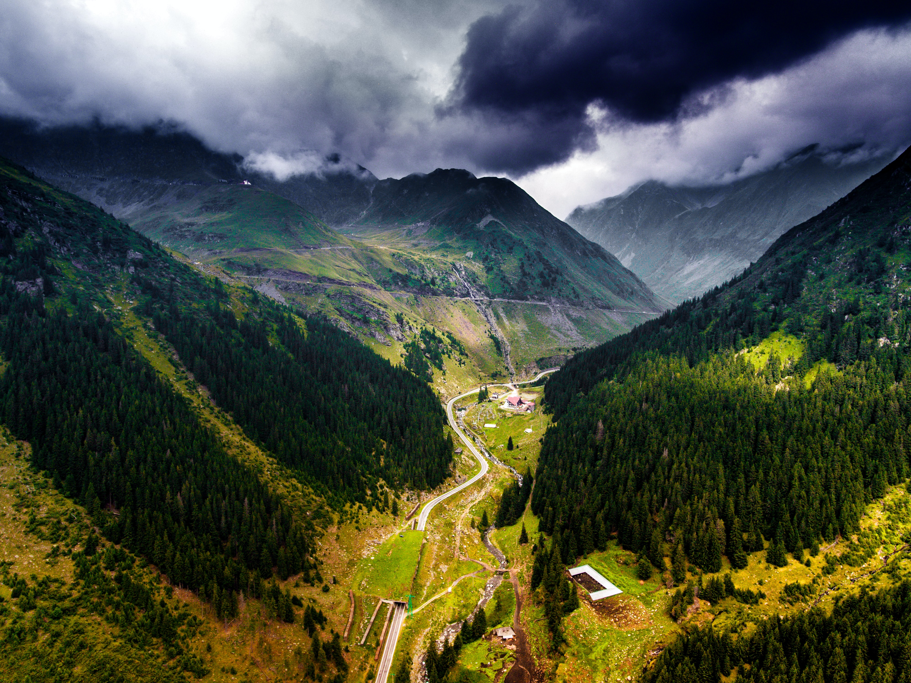
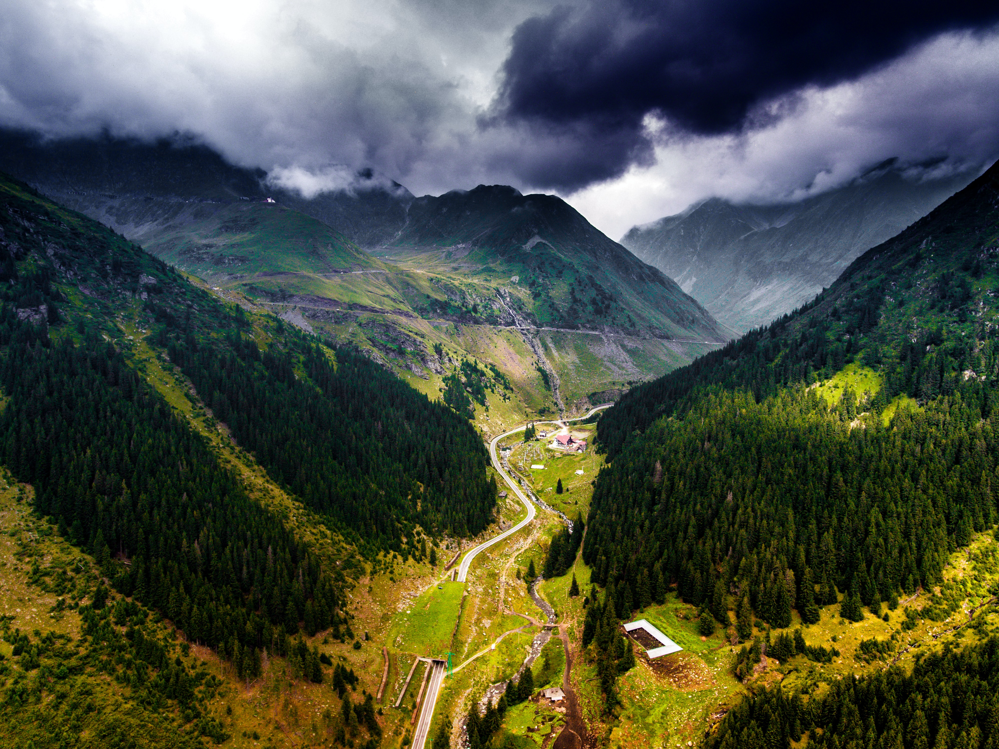
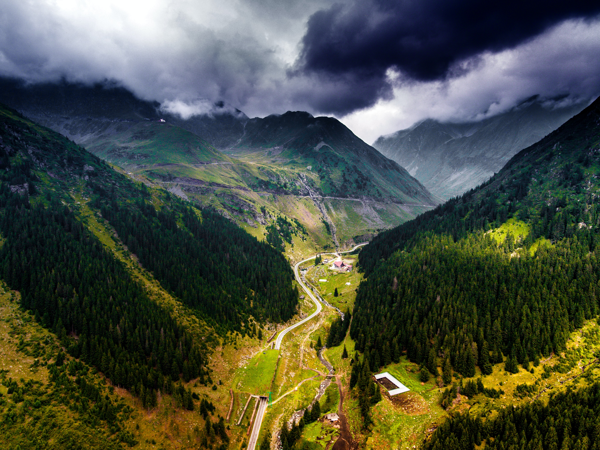

Romania is a country in southeastern Europe bordering Ukraine, Bulgaria, Moldova, Hungary and Serbia. The majority of its inhabitants are ethnic Romanian and follow the Romanian Eastern Orthodox Church. The Romanian population has traditionally and historically been rural dwellers. However, society has changed massively in recent decades due to the impact of economic and sociopolitical processes, both during and after the communist era (1947-1989). Romania has experienced widespread industrialisation and urbanisation, and is increasingly culturally oriented towards Western Europe. Nevertheless, the population remains quite religious and places great importance on family networks and values. While sometimes initially reserved when first meeting people, Romanians are known for being hospitable, warm, animated and opinionated people with a good sense of humour.
Romania continues to have a strong tradition of folklore that informs many of its customs and traditions. There are many tales of witches, giants, ghosts, spirits, heroes, fairies and monsters throughout Romania. Many of these have a pre-Christian origin. For example, the night before the Feast of Saint Andrew is marked by several customs aimed at protecting both people and their homes and animals from evil spirits (such as stringing up garlic). Some would consider this night the Romanian equivalent of Halloween. Some people also believe in the existence of supernatural occurrences (e.g. spirits and witchcraft). This is more common among Roma communities and in rural, traditional areas (such as Maramures). Urban Romanians and the younger generations generally do not believe these stories, seeing them more as cultural superstitions.
